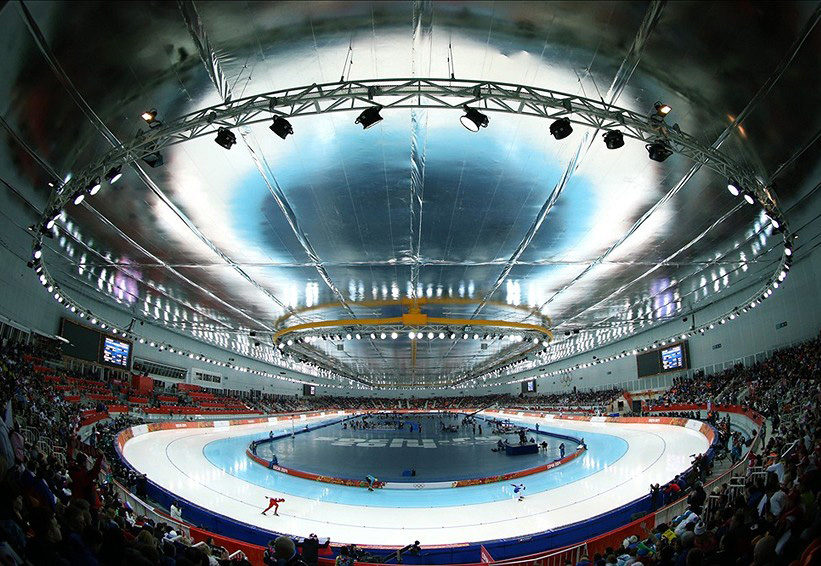

The olympic speed skating championships were held from 7 to 23 february 2014, in the Adler Arena in Sochi.
This webapp, presenting the results of that championship, was created as an exercise in using Riot.js. Riot.js aimes to be a minimalistic client side javascript framework for implementing MVC webapplications.
This webapp is mainly based on their demo found here. I took out the login-functionality, added a presenter to determine what the screen shows on start-up, split up the view-styles (though not very thourougly) and played a bit with the same data getting a different view in the presenters. The data in this webapp is static and is all contained in one text-file. No database connection or abstraction. The code for this web app can be found on GitHub.
A really good demo of Riot.js is the version of ToDoMVC Github-user 3den is making. The way model, presenter and view work together is in this demo better to understand than in the demo I used to buils OSkate.
